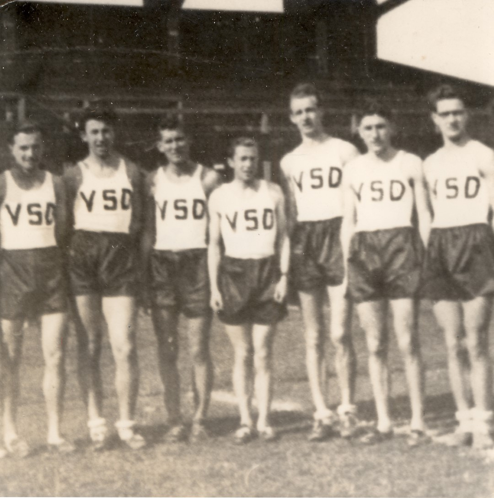
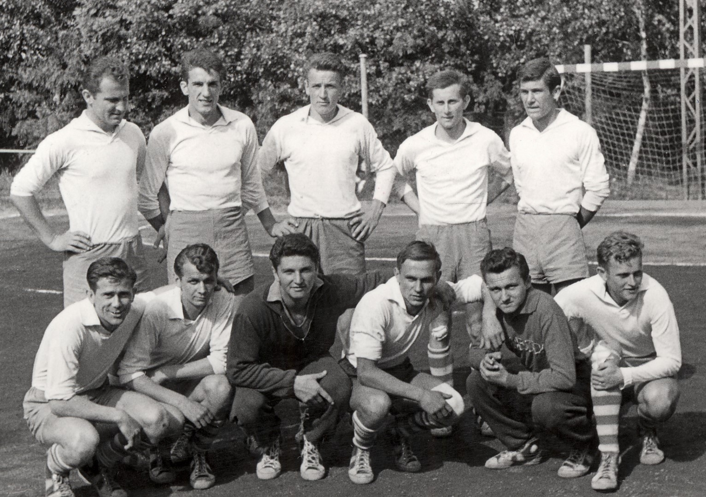
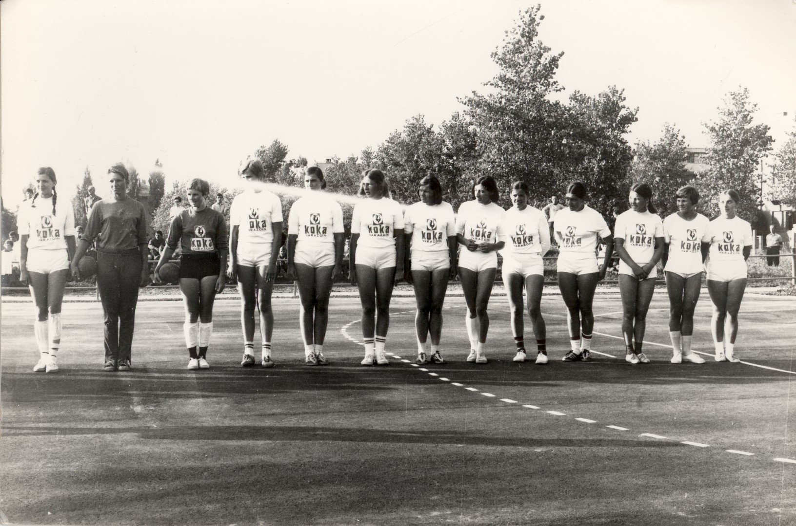
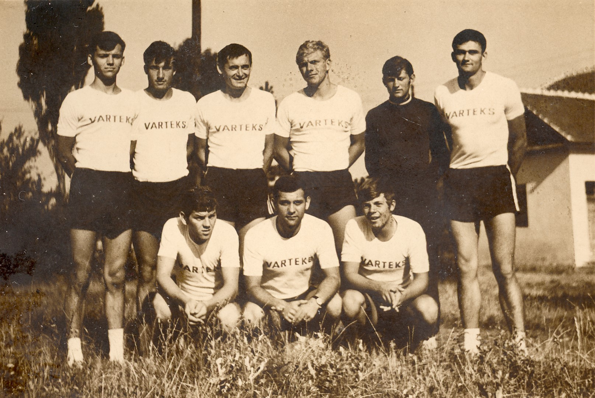

Rukomet
KRONOLOGIJA
1898.
pojavila se riječ rukomet kada učitelj tjelovježbe Ljudevit Filipec zapisuje da u sokolskoj gombaonici posjeduje lopte za rukomet
1908.
učitelj gimnastike Ljudevit Filipec u godišnjem izvješću školske 1907./08. piše da se u proljetnim i ljetnim mjesecima vježbao
1921.
u sklopu VŠK-a igra se hazena
29.5.1930.
na stadionu Varaždinskog športskog kluba (danas Sloboda) pod vodstvom Zvonimira Suligoja odigrana prva službena rukometna utakmica u Hrvatskoj i Jugoslaviji (tzv. veliki rukomet koji se igrao na većem terenu) i to između kombinirane postave petih i šestih razreda protiv osmih razreda (rezultat 1:0)
1931.
osnivaju se hazenaške sekcije unutar Slobode i Slavije
1934.
hazenašice Slavije igraju protiv reprezentacije Poljske
1939.
osnovano Varaždinsko športsko društvo VŠD, unutar Društva igra se i rukomet


RK VSD - Bajsić, Rot, Drvarek, Rak, Ferkić, Takač, Nikolić, 1939, GMV 106580
1948.
osnovan rukometni športski klub RŠK Sloboda – muški (osnivač Dražen Ožeg sa skupinom gimnazijalaca)
1949.
osnovan ženski rukometni klub Kožarac u sklopu istoimenog Radničkog športskog društva
1950.
rukometašice Kožarca jesenske prvakinje Hrvatske lige
1951.
nastavnik tjelesne kulture na gimnaziji Senen Žamić uvodi mali rukomet (dotad se igrao rukomet na nogometnom igralištu)
1952.
u sklopu Tekstilca pod tim imenom osnovan ženski rukometni klub
1952.
rukometaši Slobode prvaci Hrvatsko-slovenske lige
1954.
odigrana posljednja utakmica velikog rukometa
1955.
osnovan muški rukometni klub Tekstilac (kasnije Varteks)
1957.
rukometašice Tekstilca osvajaju titulu prvaka Hrvatsko-slovenske lige
1961.
RK Slobode prvo mjesto u Drugoj ligi – zapad - prvi puta u Prvoj jugoslavenskoj ligu gdje nastupaju dvije sezone

RKb Sloboda, 1962, GMV 106581
1967.
ženski rukometni klub Sloboda mijenja ime u Koka
1969.
ŽRK Koka pod vodstvom trenera Antuna Đurića u prvoj jugoslavenskoj rukometnoj ligi

ŽRK Koka, 1969, GMV 106582
1971.
RK Varteks u Drugoj saveznoj ligu - do 1979.

RK Varteks , 1971, GMV 106583
1972.
rukometaš Dobrivoje Selec, rođen u Varaždinu, osvaja zlatnu medalju s rukometnom reprezentacijom Jugoslavije na Olimpijskim igrama u Münchenu
1973.
izgrađena sportska dvorana u Graberju u kojoj je upriličeno otvaranje te su odigrane utakmice skupine 5. Svjetskog prvenstva za rukometašice (u Varaždinu igra domaćin Jugoslavija)
1978.
Četveroboj zemalja - ČSSR, Danska, SR Njemačka i Jugoslavija
1978.
osnovan rukometni klub Banfica
1979.
u Varaždinu održane Balkanske igre za rukometaše (dvije selekcije Jugoslavije, Rumunjska i Bugarska)
1983.
Rukometni savez Varaždina pokrenuo tradicionalni Turnir prvakinja (do 1992.)
1986.
osnovan rukometni klub Vartilen (kasnije mijenja ime u Crodel)
1996.
RK Varteks prvi puta sudjeluje u europskom natjecanju (Kup gradova Europe)
2004.
Blaženko Lacković, ponikao u RK Varteks, sudjeluje na OI u Ateni gdje osvaja zlatnu medalju s reprezentacijom Hrvatske
2009.
u sklopu 21. svjetskog prvenstva za rukometaše u varaždinskoj Areni odigravaju se utakmice Prvenstva